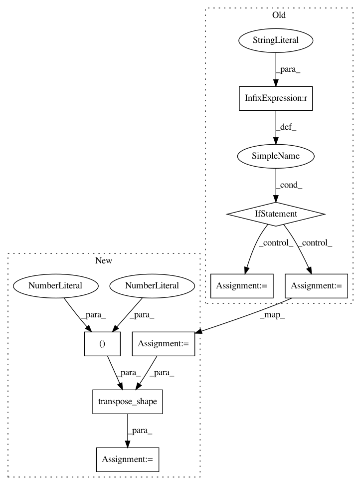

1068e173eafd15e5aa9f40b9f73590a7f5be4a84,keras/layers/convolutional_recurrent.py,ConvRNN2D,compute_output_shape,#ConvRNN2D#Any#,150
Before Change
if self.return_state:
output_shape = [output_shape]
if cell.data_format == "channels_first":
output_shape += [(input_shape[0], cell.filters, rows, cols)
for _ in range(2)]
elif cell.data_format == "channels_last":
output_shape += [(input_shape[0], rows, cols, cell.filters)
for _ in range(2)]
return output_shape
def build(self, input_shape):
// Note input_shape will be list of shapes of initial states and
After Change
if self.return_state:
output_shape = [output_shape]
base = (input_shape[0], rows, cols, cell.filters)
base = transpose_shape(base, cell.data_format, spatial_axes=(1, 2))
output_shape += [base[:] for _ in range(2)]
return output_shape
def build(self, input_shape):
In pattern: SUPERPATTERN
Frequency: 3
Non-data size: 8
Instances
Project Name: keras-team/keras
Commit Name: 1068e173eafd15e5aa9f40b9f73590a7f5be4a84
Time: 2018-08-05
Author: gabrieldemarmiesse@gmail.com
File Name: keras/layers/convolutional_recurrent.py
Class Name: ConvRNN2D
Method Name: compute_output_shape
Project Name: keras-team/keras
Commit Name: 9aed521e6650384533f69d7b46c0210b45ae9391
Time: 2018-08-08
Author: gabrieldemarmiesse@gmail.com
File Name: keras/backend/tensorflow_backend.py
Class Name:
Method Name: spatial_3d_padding
Project Name: keras-team/keras
Commit Name: 1068e173eafd15e5aa9f40b9f73590a7f5be4a84
Time: 2018-08-05
Author: gabrieldemarmiesse@gmail.com
File Name: keras/backend/tensorflow_backend.py
Class Name:
Method Name: spatial_2d_padding